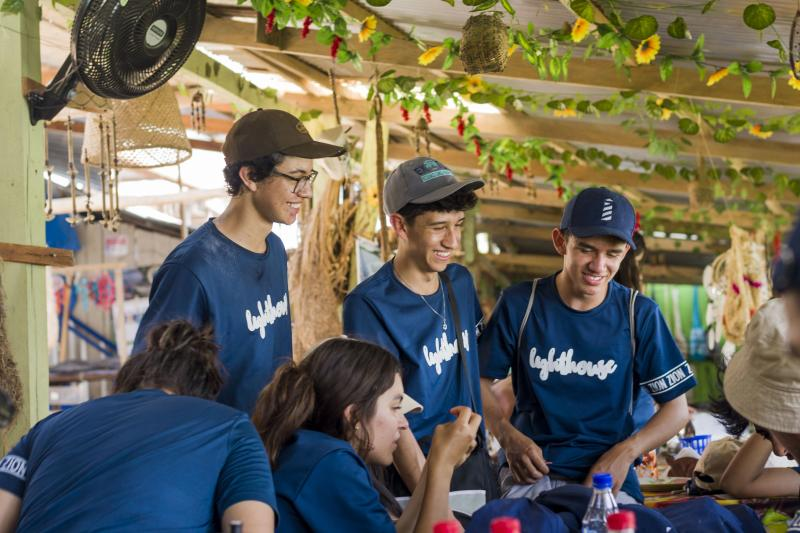

Experiencia Voluntaria
Voluntario en la Fundación Lighthouse
Desde 2022, he estado colaborando con la Fundación Lighthouse, En donde he tenido la oportunidad de ir dos veces a viajes misioneros y de voluntariado a la comunidad indígena Zaragoza en la amazonía
Ambos viajes han cumplido con un proyecto educativo dentro de la comunidad.
En el primero, se construyó y decoró una biblioteca para la comunidad, mientras se adelantaba un proceso de enseñanza en competencias de lecto-escritura y aritmética básica. Mientras tanto, tambien fuimos a otras comunidades como La Libertad y Macedonia para evangelizar y compartir tiempo con cada comunidad.
En el segundo viaje,se hicieron obras de restauración en distintos puntos de la comunidad, como la cancha de fútbol, la biblioteca y la iglesia. También fuimos a otras comunidades como El Vergel y Macedonia. Además, estuve a cargo del ministerio de música de la fundación, en el cual se realizaron varios trabajos como:
- Dirección de tiempos de alabanza con las distintas comunidades
- Enseñanza de teoría e instrumentos musicales a la comunidad de Zaragoza
- Ambientación de devocionales y tiempos en grupo de la fundación
Pianista para ZION Worship
Desde 2023 participo como pianista para ZION Worship, en las que he tenido al oportunidad de hacer varias giras dentro y fuera del país. También he participado como compositor para los álbumes Transparente y |Absoluto|